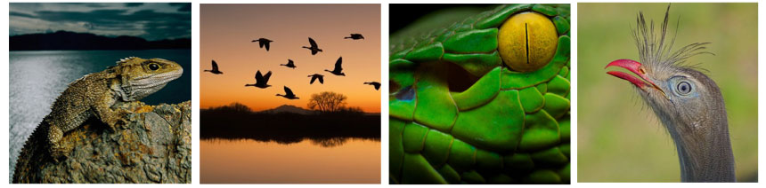
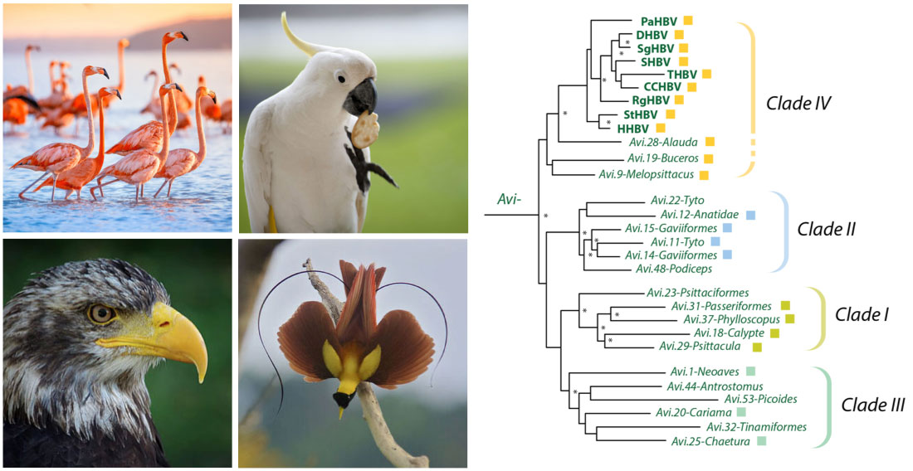
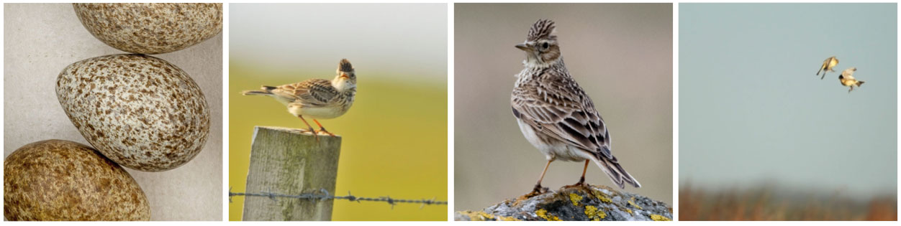
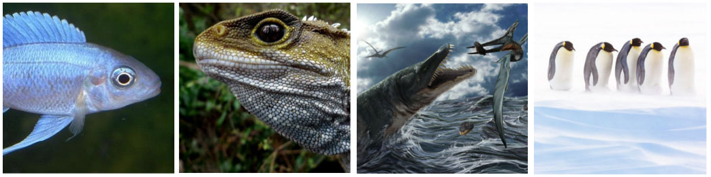

Endogenous hepadnavirus (eHBV) data
Whole genome sequencing has revealed the presence of DNA sequences derived from hepadnaviruses in vertebrate genomes. These ‘endogenous hepatitis B viruses’ (eHBVs) are thought to have originated via ‘germline incorporation’ events in which hepadnavirus DNA sequences were integrated into chromosomal DNA of germline cells and subsequently inherited as novel host alleles. eHBV sequences are in some ways equivalent to hepadnavirus ‘fossils’ in that they provide a source of retrospective information about the distant ancestors of modern hepadnaviruses.
We created an extension to Hepadnavirus-GLUE to organise the 'genomic fossil record' of hepadnaviruses. This page provides a description of this extension, and quick links to specific data items.
Please note: links to files on GitHub are mainly designed to indicate where these files are located within the repository. To investigate files (e.g. tree files) in the appropriate software context we recommend downloading the entire repository and browsing locally.

Timeline of hepadnavirus evolution. The inset panel shows the evolutionary relationships of hepadnavirus genera, the larger tree is a time-calibrated evolutionary tree of vertebrates. Geological eras are indicated by background shading. The scale bar shows time in millions of years before present. For details see Lytras et al (2020). Mya=Million years ago.
Relevance to molecular biological studies of hepadnaviruses
Endogenous viral sequences can inform our understanding of contemporary viruses in a wide variety of ways. Perhaps most importantly, EVEs allow calibration of the long-term evolutionary history of virus groups, which greatly influences how we understand their biology.
Importantly, once time calibrations have been established, a far richer range of comparative genomic studies can be performed. By examining variation in the light of a known evolutionary history, these studies can provide invaluable insights into the biological mechanisms through which viruses replicate and spread.
Some of the species in which we have identified EVEs derived from hepadnaviruses (commonly referred to as endogenous hepatitis B (eHBV) elements)
From left to right: emperor penguin (Aptenodytes forsteri), barn owl (Tyto alba), cormorants (family Phalacrocoracidae), Anna's hummingbird (Calypte anna).
Relevance to viral metagenomics
The eHBV sequences in Hepadnavirus-GLUE can provide a useful resource for those interested in identifying and characterising hepadnaviruses in metagenomic datasets.
Firstly, the eHBV sequences collated here can be used to exclude any potential 'false positive' hits (i.e. sequences that seem to represent new hepadnaviruses but in fact derive from genomic DNA).
In addition, when new hepadnavirus species are identified, inclusion of EVEs in phylogenetic analyses can often provide useful information about their broader ecology and evolution, including (uniquely) their long-term evolution.
Relevance to genomics
eHBVs are not only useful genetic markers, several lines of evidence indicate they may have, or have had, functional roles as host alleles. The prevalence of multicopy eHBV lineages in some species suggests that germline incorporation of hepadnavirus sequences might have influenced the evolution of host genomes in important ways.
Consistent with the idea that germline incorporation of hepadnavirus sequences might in some cases be favoured by selection at the level of the host, we have identified several examples of loci containing multiple fixed eHBV elements (Lytras et al, 2020), each derived from a distinct germline colonisation event. It remains unclear whether this reflects natural selection due to a favourable influence or preferential integration of hepadnaviruses into particular loci (e.g. because they are accessible in embryonic cells).

Additional species in which we have identified endogenous hepatitis B (eHBV) elements
From left to right: tuatara (Sphenodon punctatus), ducks (family Anatidae), snakes (suborder Serpentes), red-legged seriema (Cariama cristata).
The EVE component of Hepadnaviridae-GLUE
Currently, the distribution and diversity of hepadnavirus-related sequences in animal genomes remains incompletely characterized. Progress in characterising these elements has been hampered by the challenges encountered attempting to analyse their fragmentary and degenerated sequences. Hepadnavirus-GLUE aims to address these issues.
We have incorporated into this project a set of principles for organising the hepadnavirus 'fossil record', and a protocol through which it can be accessed and collaboratively developed.
This website provides background information about the EVE component of Hepadnavirus-GLUE, and direct links to specific data items.
Nomenclature for eHBVs
We have applied a systematic approach to naming eHBV, following a convention developed for endogenous retroviruses. Each element was assigned a unique identifier (ID) constructed from a defined set of components.
The first component is the classifier ‘eHBV’ (endogenous hepatitis B virus/endogenous hepadnavirus).
The second component is a composite of two distinct subcomponents separated by a period: (i) the name of eHBV group; (ii) a numeric ID that uniquely identifies the insertion. The numeric ID is an integer that identifies a unique insertion locus that arose as a consequence of an initial germline infection. Thus, orthologous copies in different species are given the same number.
Where an EVE sequence is thought to have been duplicated within the germline following it's initial incorporation (e.g. via segmental duplication or transposition) we have appended an additional 'duplicate id' to the numeric ID, separated by a period. Please note that we have not yet resolved the orthologous relationships among sets of eHBV sequences belonging to multicopy eHBV lineages. We have therefore assigned unique duplicate IDs to each sequence within these lineages.
The third component of the ID defines the set of host species in which the ortholog occurs, or did occur prior to being deleted.
Highlighted EBVs: Avi.1-Neoaves
eHBV-Avi.1-Neoaves was the first hepadnavirus-derived EVE to be described (Katzourakis and Gifford, 2010; Suh et al, 2013). It is located in an intron of the FRY Microtubule Binding Protein gene and derives from a germline incorporation event involving an ancient avihepadnavirus. This event predates the divergence of the avian clade Neoaves, which includes all modern birds except the Galloanserae (ducks and chickens) and Palaeognathae. Consequently, an Avi.1-Neoaves insertions are present in multiple avian species.

Left panel: the clade 'Neoaves' includes almost all modern birds, including (clockwise) flamingos (order Phoenicopteriformes), parrots (order Psittaciformes), songbirds (order Passeriformes) and all birds of prey. Right panel: Analysis using Hepadnavirus-GLUE has revealed that at least four distinct clades (I-IV) of avihepadnavirus have existed during hepadnavirus evolution.
Links to related data items:
- eHBV-Avi.1-Neoaves nucleotide consensus sequences
- Avihepadnaviridae phylogeny with EVEs
- Avian phylogeny (part 1) (taken from Prun et al)
- Avian phylogeny (part 2) (taken from Prun et al)
Highlighted EBVs: Avi.14-Gavia and Avi.15-Gavia
These two eHBV loci in the genome of the common loon (Gavia immer) derive from germline incorporation events involving ancient avihepadnaviruses. The viruses involved belong to a distinct subgroup of avihepadnaviruses, which we labeled 'clade II'. So far this group of hepadnaviruses is only known from eHBV sequences, and it remains unknown whether any modern representatives still circulate in birds.
Left to right: (i) The common loon (Gavia immer) contains two eHBV insertions derived from clade II aviheapdnaviruses. (ii) Emperor penguins also contain clade II avihepadnaviruses, indicating their biogeographic host range could extend to the Antarctic; eHBV insertions derived from clade II were also identified in (iii) Great crested grebe (Podiceps cristatus) and; (iv) barn owl (Tyto alba)
The two insertions are similar in that they both span near-complete hepadnaviral genomes. Remarkably, however, they appear to have been acquired in entirely different germline integration events. In our recent paper we show that - consistent with this - both insertions show a greater degree of divergence in a region of the Surface protein associated with binding to host receptors than they do in other genomic regions.
Links to related data items:
- Avi.14-Gavia nucleotide sequence
- Avi.15-Gavia nucleotide sequence
- Similarity plots comparing clade II eHBV sequences
Highlighted EBVs: Avi.27-Phalacrocoracidae
Avi.27-Phalacrocoracidae is a multicopy eHBV lineage identified in cormorants (family Phalacrocoracidae). We identified approximately 300 copies of this avihepadnavirus derived element in the cormorant germline. All avi.27 elements are quite short, spanning around 350 nucleotides of the polymerase gene. Analysis of flanking DNA regions suggested that the insertion has been mobilised within the cormorant germline by transposable elements (TEs).
Cormorants have many anatomical and physiological adaptations for diving, including amphibious hearing. Left to right: (i) and (ii) Great cormorant (Phalacrocorax carbo); (iii) Brandt's cormorant (Phalacrocorax penicillatus); (iv) Cormorant fishing is a traditional fishing method in which fishermen use trained cormorants to fish in rivers. Historically, cormorant fishing has taken place in Japan and China, as well as some European countries.
Phylogenies indicate that the initial germline incorporation event that gave rise to this multicopy eHBV lineage predates the diversification of cormorants. How did so many distinct eHBV/TE insertions get fixed in the cormorant germline? Possibly, the capture of EVE sequences offered a selective advantage to TE lineages that allowed them to proliferate so widely that numerous copies were fixed only by chance. Alternatively, TE sequences containing hepadnavirus-derived DNA might, for some reason, be more likely to be fixed.
Numerous lines of evidence indicate that TEs play a role in rewiring gene regulatory networks. This process is thought to underlie many of the evolutionary adaptations seen in vertebrates. Possibly, fixation of eHBV-avi.28 copies in cormorants genomes reflects a role for these eHBVs - or the TEs they are embedded within - in facilitating cormorant evolution and adaptation.
Links to related data items:
- Avi.27-Phalacrocoracidae consensus sequence
- Avihepadnaviridae phylogeny with EVEs
- Analysis of genomic regions flanking avi.27 insertions
Highlighted EBVs: Avi.28-Alauda

Eurasian skylark (Alauda arvensis). Skylarks sing beautiful, complicated songs over grasslands, rolling downs, coastal saltmarshes, and wide arable fields.
We identified a full-length eHBV insertion in the genome of the Eurasian skylark (Alauda arvensis). This sequence is notable for its close relationship to avihepadnavirus species that currently circulate in birds. All extant avihepadnaviruses fall into one subgroup (which we labeled 'IV' in our study). Avi.28.Alauda groups as a basal member of this clade.
Links to related data items:
Highlighted EBVs: Meta.1-Sauria
Meta.1.Sauria is - we think - the oldest EVE ever described. We identified putatively orthologous copies in a lizard - the tuatara (Sphenodon) - as well as in multiple avian species. This implies that germline integration occurred prior to the divergence of these lineages in the late Paleozoic Era (~250-300 million years ago).
This insertion also provides important new insights into the evolution of hepadnaviruses. It belongs to the recently described Metahepadnavirus genus. So far, metahepadnaviruses have only been identifiied in fish. Unexpectedly, these fish viruses were found to group relatively closely with mammalian hepadnaviruses (genus Orthohepadnavirus). This seemed to imply a transfer of viruses between fish and mammals. However, eHBV sequences reveal that metahepadnaviruses have an ancient origin and - historically at least - a broad distribution.

Metahepadnaviruses are a recently discovered group of hepadnaviruses left to right: (i) White sucker ( ) - one of the fish species in which metahepadnaviruses were first identfied; (i) eHBVs derived from metahapadnaviruses were identified in the tuatara (Sphenodon punctatus) - a highly divergent reptile; (iii) Tuataras are the only surviving representatives of the ancient reptile lineage that contained the marine ichthyosaurs and pleisiosaurs; (iv) Meta.1-Sauria insertions have also been preserved in some avian genomes. Emperor penguins contain a relatively well-preserved ortholog.
Links to related data items:
Raw eHBV sequences and data
These are the raw data generated by database-integrated genome screening (DIGS). The tabular file contains information about the genomic location of each EVE. EVEs were classified by comparison to a reference library of polypeptide sequences designed to represent the known diversity of hepadnaviruses - this includes extinct lineages represented only by endogenous viral elements (EVEs).
These data were obtained via DIGS performed in vertebrate genome assemblies downloaded from NCBI genomes (2020-07-15).
Raw data about the EVEs in tabular format can be found here.
Nucleotide level data in FASTA format (individual files) can be found here.
eHBV reference sequences and data
We constructed consensus sequences for paleoviruses by aligning eHBV sequences derived from the same initial germline colonisation event - i.e. orthologs in distinct species, and paralogs that have arisen via intragenomic duplication.
Reference sequence data in tabular format are here.
Nucleotide level data:
| Taxonomic group | Full-length eHBV | Core codons | Surface codons | Pol codons |
|---|---|---|---|---|
| Avihepadnavirus | FASTA MSA | FASTA MSA | FASTA MSA | FASTA MSA |
| Herpetohepadnavirus | FASTA MSA | FASTA MSA | FASTA MSA | FASTA MSA |
| Metahepadnavirus | FASTA MSA | FASTA MSA | FASTA MSA | FASTA MSA |
Protein level data:
| Taxonomic group | Core AA | Surface AA | Pol AA |
|---|---|---|---|
| Avihepadnavirus | FASTA MSA | FASTA MSA | FASTA MSA |
| Herpetohepadnavirus | FASTA MSA | FASTA MSA | FASTA MSA |
| Metahepadnavirus | FASTA MSA | FASTA MSA | FASTA MSA |
Multiple sequence alignments
Multiple sequence alignment constructed in this study are linked together using GLUE's alignment tree data structure. Alignments in the project include:
- A single ‘root’ alignment constructed to represent proposed homologies between representative members of major hepadnavirus lineages (including extinct lineages represented only by eHBVs).
- ‘Genus-level’ alignments constructed to represent proposed homologies between the genomes of representative members of specific hepadnavirus genera and eHBV reference sequences.
- ‘Tip’ alignments in which all taxa are derived from a single eHBV lineage.
Phylogenetic trees
We used GLUE to implement an automated process for deriving midpoint rooted, annotated trees from the alignments included in our project.
Trees were constructed at distinct taxonomic levels:
- Recursively populated root phylogeny (Rep)
- Genus-level phylogenies
- eHBV lineage-level phylogenies
Paleovirus-specific schema extensions in Hepadnaviridae-GLUE
The paleovirus component of Hepadnavirus-GLUE extends GLUE's core schema to allow the capture of EVE-specific data. These schema extensions are defined in this file and comprise two additional tables: 'locus_data' and 'refcon_data'. Both tables are linked to the main 'sequence' table via the 'sequenceID' field.
The 'locus_data' table contains information pertaining to individual EVE sequences: e.g. species in which they occur, genome assembly version, genomic location(i.e. scaffold, location coordinates, and orientation).
The 'refcon_data' table contains information pertaining to our eHBV reference sequences, which we have constructed in an effort to reconstruct, as closely as possible, the sequences of the progenitor viruses that gave rise to EVEs.
Related Publications
Lytras S, Arriagada G, and RJ Gifford
(2020)
Ancient evolution of hepadnaviral paleoviruses and their impact on host genomes.
Virus Evolution
[view]
Larsen ON, Wahlberg M, and J. Christensen-Dalsgaard
(2020)
Amphibious hearing in a diving bird, the great cormorant (Phalacrocorax carbo sinensis).
J Exp Biol.
[view]
Prum RO, Berv JS, Dornburg A, Field DJ, Townsend JP, Lemmon EM, Lemmon AR.
(2015)
A comprehensive phylogeny of birds (Aves) using targeted next-generation DNA sequencing.
Nature
[view]
Suh A, Brosius J, Schmitz J, and JO Kriegs.
(2013)
The genome of a Mesozoic paleovirus reveals the evolution of hepatitis B viruses.
Nat Commun.
[view]
Katzourakis A. and RJ. Gifford
(2010)
Endogenous viral elements in animal genomes.
PLoS Genetics
[view]